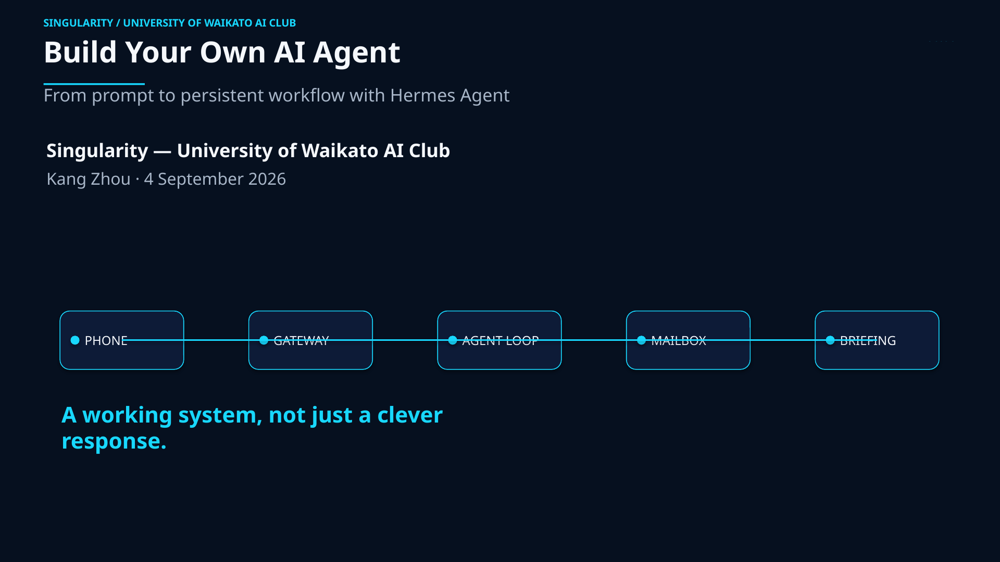

Singularity workshop · 04 / 09 / 26
Build Your Own AI Agent
From prompt to persistent workflow with Hermes Agent
Turn an installed model interface into a working, scheduled system. We will move from a live demonstration to a manually tested daily Gmail briefing delivered to a paired Telegram chat.
- Date
- 4 September 2026
- Time
- 6:00 pm - 8:00 pm
- Where
- MSB.0.01, Hamilton Campus, University of Waikato

Start here
Bring the workshop with you.
The guide is the source of truth for commands and setup details. Keep it open on your laptop before the session begins.
Before you arrive
Three essentials, plus one optional email lane.
Installation is a prerequisite, not the focus of the taught 90-minute route. Check the three essentials early and use the support lane if one is missing; the Gmail lane can be deferred.
WSL2/Linux shell
Have a working WSL2/Linux terminal and the laptop you will use in the workshop.
Hermes installed
Run hermes --version successfully before you arrive.
Telegram ready
Bring the phone you will use to pair Telegram with your local gateway.
Optional full-email lane
Gmail two-step verification and app-password access let you try the full briefing. The Telegram-only fallback still works.
Workshop flow
Four checkpoints. One working system.
Demo first, then build the smallest safe path and verify it before trusting the schedule.
-
00
Preflight
Prove the local/model foundation with
Review setuphermes --version,hermes doctor, and a short local chat. -
01
Telegram
Pair only the intended account, install the gateway, and set the target delivery chat with
Read messaging docs/sethome. -
02
Mailbox
Validate the Gmail lane through Himalaya in read-only use. Do not put an app password or token in Telegram or on a shared screen.
Read the boundary -
03
Scheduled briefing
Describe a self-contained job, trigger it manually, inspect the run, and confirm the daily briefing reaches the intended Telegram chat. Verification must confirm no mail was sent, moved, deleted, archived, or re-flagged.
Read cron docs
Definition of done
A result you can inspect, not just a clever response.
A manually triggered job used approved/configured input, respected its authorization boundary, and delivered to the intended channel.
Primary outcome A safe daily Gmail briefing read through Himalaya and returned to Telegram.
Fallback outcome A safe Telegram-only fallback: a scheduled daily check-in that accesses neither email nor local files.
Two-hour event window; teaching capped at 90 minutes: 6:00 pm - 8:00 pm includes arrivals, setup, and troubleshooting; the core route is 85 minutes with 5 minutes held for recovery and questions.
Safety boundary
Connect the tools without widening the trust boundary.
Use a dedicated workshop/test mailbox with synthetic messages for demonstrations. Keep tokens, app passwords, pairing material, and login codes out of the page, projector, and Telegram.
Allowed today
Read and summarize intended messages; deliver the result to the paired chat.
Not allowed today
Send, move, delete, archive, or re-flag mail. Himalaya may technically support mutation; this lab uses policy and prompt constraints.
Privacy reminder
The local terminal runs with your Linux user permissions. Convenience is not isolation; add approval, logs, and rollback before adding write access.
Help lane
Current docs for the parts you will touch.
Use first-party documentation for setup and recovery. The workshop guide keeps the room moving; these links stay current after the event.